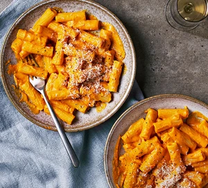

Creamy Pumpkin Pasta Recipe

Description:
Spooky season pumpkins no waste tasty creamy belly
2 tbsp olive oil
1 medium onion - finely chopped
2 cloves of garlic - crushed
500g pumpkin or squash - peeled and cubed
50-100ml whole milk
2 tbsp tomato puree
2 tbsp mascarpone
250g shot pasta
40g grated parmesan
Steps:
Heat the oil in a large, shallow, flameproof casserole or frying pan over a low-medium heat and fry the onion with a pinch of salt for 10-15 mins until softened and translucent. Add the garlic and fry for 1 min more. Remove from the heat and leave to cool slightly.
Meanwhile, cook the pumpkin in a pan of boiling salted water for 10-15 mins until tender when pierced with a cutlery knife. Drain and tip into a blender (or use a hand blender). Blitz with 50ml milk and the onions until completely smooth, gradually adding more milk until the mixture is thick enough to just coat the back of a spoon (you may not need all the milk). Tip into a large frying pan with the tomato purée and mascarpone, and bring to a simmer over a low heat.
Cook the pasta in a large pan of boiling, salted water following pack instructions. Drain, reserving a cupful of the cooking water. Toss the pasta with the pumpkin sauce, parmesan and 50-100ml of the reserved water to loosen. Season and scatter with extra parmesan.